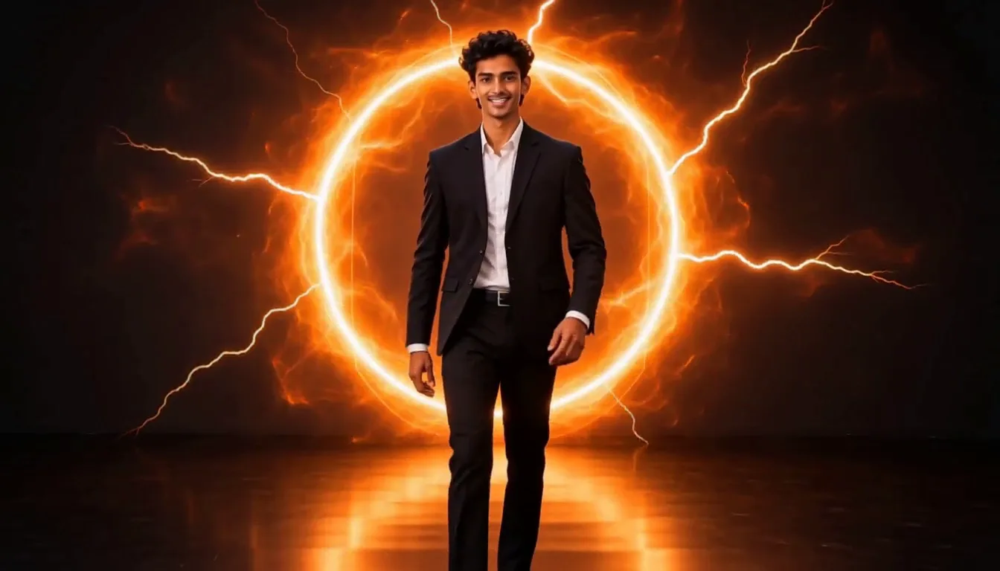

Developer, AI/ML & Web3 explorer.
Building ideas into working experiences.
0% of the fall loaded
Developer, AI/ML & Web3 explorer.
Building ideas into working experiences.



I design for the second after the fall, when everything is noise and one idea refuses to stay down. Identities, motion and websites for brands that would rather be remembered than liked.
I enjoy building practical projects across Python, AI/ML, computer vision and Web3.
Exploring GenLayer, GTE and emerging Web3 ecosystems while building software projects and interactive experiences.
Every fall needs a way out.
Some doors only open from the inside.
This is where you come in.